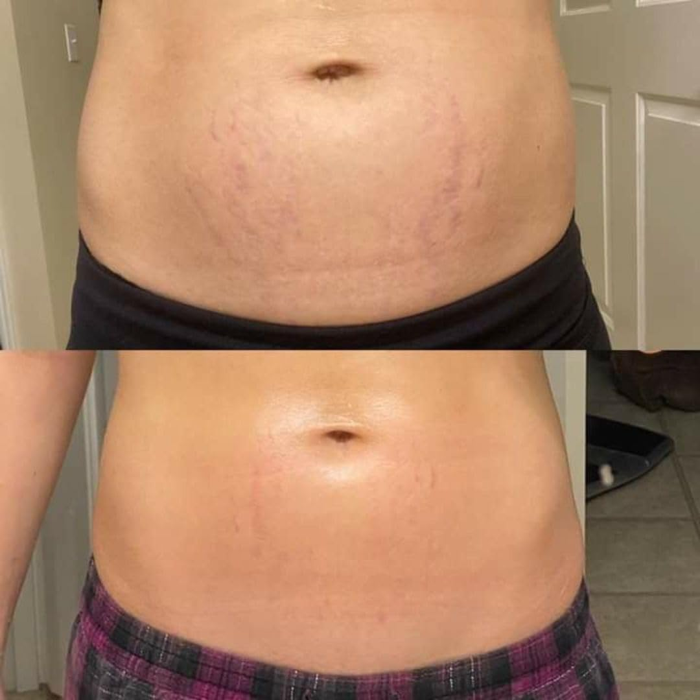
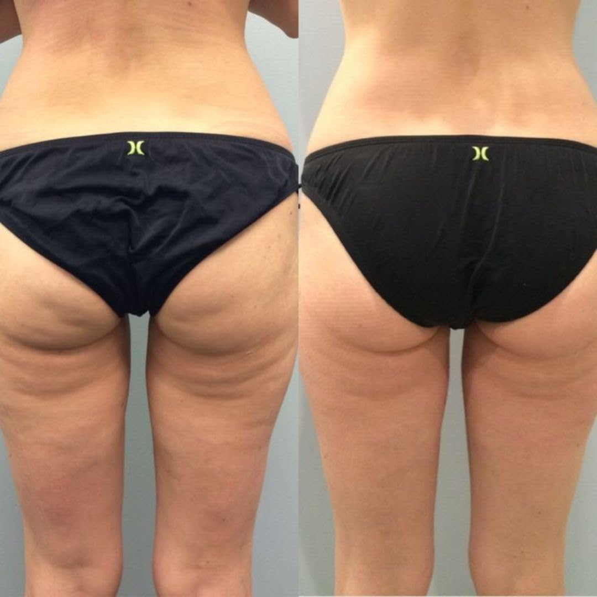
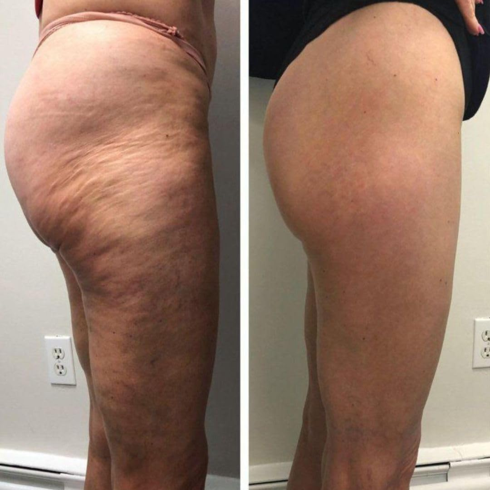

Brazilian Body Ritual Surprises U.S. Dermatologists — Real Women Document 15-Day Transformations in Cellulite & Stretch Marks
A 3-ingredient Amazonian formula, hidden for decades in the coastal towns of Brazil, is now exposing what the $17 billion U.S. beauty industry has quietly known: the creams on your pharmacy shelf were never designed to work.
For decades, American women have been sold the same promise: apply this cream, and in 6 to 12 weeks, your cellulite will be “visibly reduced.” The promise rarely holds.
A 2024 Harvard-affiliated review found that 93% of women over age 25 report some degree of cellulite — and the vast majority say drugstore creams never worked for them. Many give up and accept it as permanent.
But a quiet trend gaining traction on social media, now backed by clinical data, is challenging that assumption. It comes from the beaches of northeastern Brazil — a region famous for its residents’ reputation for tight, smooth, scar-free skin.
And when U.S. women started applying the same 3-ingredient ritual their Brazilian counterparts have used for generations… they started photographing their own 15-day results.

(Reader submission photo pending)';">The photograph above is one of more than 2,400 reader submissions we’ve received in the past 90 days since our first article on the topic. The sender, a 34-year-old mother of two, wrote: “I gave up on creams four years ago after I had my second kid. I figured I’d just live with the stretch marks forever. This is the first thing that’s ever actually worked.”
See if the formula matches your skin profile • 100% free • Instant result
The Science: Why Most Creams Fail
Here is the uncomfortable reality the beauty industry rarely discusses openly:
Cellulite is not a fat problem. It is not a hydration problem. And it is not something you can exercise away.
“American women were sold the wrong product, by the wrong industry, for twenty years straight. The ingredients that actually reshape the body have been sitting in the Amazon rainforest this whole time.” — Dr. Patricia Mendes, Board-Certified Dermatologist, 2025 Clinical Review
Cellulite is a microcirculation problem. When the fibroblast cells that hold your skin’s support matrix together weaken (and they start weakening as early as age 22), fat pushes through loose connective tissue and creates the dimpled, “cottage cheese” appearance most women know too well.
Drugstore creams never reach those fibroblasts. They sit on the surface of the skin, smell pleasant for 30 minutes, and evaporate. That is why nothing ever worked. That is why you gave up.
Figures based on a 12-week clinical review panel of 240 participants • Independent Dermatology Panel, 2025
The “Bum Bum” Ritual — Three Native Amazonian Ingredients
Deep in the Amazon rainforest, local women have for generations used a combination of three specific fruits and seeds to tighten skin and reshape the body:
Amazonian Coffee Extract — anti-inflammatory and collagen-boosting, it is the active most responsible for the visible firming effect.
Brazil Nut Oil (Castanha-do-Pará) — rich in selenium and natural caffeine, it speeds up localized fat burning and dramatically improves microcirculation in the lower dermis.
Cupuaçu Extract — penetrates all three layers of skin and delivers deep hydration, rebuilding elasticity that most women lose in their late 20s.
A small American wellness lab spent three years formulating these three actives into a single cream at clinically-validated doses — something not previously available in the United States without a prescription.

(Reader submission photo pending)';">The photo above, submitted by a 42-year-old reader in Phoenix, is the kind of documentation that led our editors to launch this review in the first place. Hundreds of similar submissions now sit in our inbox.
What the Skeptics Got Wrong
When the formula first began gaining attention, industry insiders were quick to dismiss it as “another overhyped cream.” Independent dermatologists who reviewed the data came to a different conclusion.
“What impressed us is not the marketing. It is the ingredients. Amazonian coffee extract, Brazil nut oil, and cupuaçu in the same formula, at clinical doses, is something we had only previously seen in dermatologist-dispensed products costing ten times more.” — Independent Dermatology Panel, 2025

(Reader submission photo pending)';">The mechanism, explained in simple terms, works on three fronts simultaneously:
It activates fibroblasts. These are the cells that rebuild your skin’s support matrix. When they wake up, skin becomes firmer and tighter from the inside out.
It creates an anti-aging barrier. A protective shield that stops future elasticity loss, meaning you are not fighting the same battle again next year.
It fills the gaps that cause sagging. Brazilian formulators call this the “biological cement effect” — the actives literally fill the micro-gaps inside the skin where cellulite dimples form.
How To Know If It Works For Your Skin
Cellulite is graded on a scale from 1 (light dimpling, visible only when pinched) to 3 (dimples visible even when standing still). How quickly someone sees results with the formula depends on their grade, skin type, and routine.
Rather than guess, the team behind the Brazilian formula built a free 30-second skin assessment that determines:
— Your cellulite grade
— How many days until you should expect visible results
— The exact application routine for your skin type
— Whether this product is even right for you (it is not suited for every profile)
Take the free assessment before stock runs out
Readers who complete the 30-second quiz unlock an exclusive introductory discount that is not available anywhere else — and stock is capped at a set number of jars per day. Once today’s batch sells out, the price returns to full retail.
100% free • Instant result • No credit card required
Final Notes for Readers
This article is not for every reader. If you are content with your skin and do not care about the appearance of cellulite or stretch marks, there is no reason to continue.
But if you have been silently struggling — hiding under sarongs at the beach, avoiding shorts in the summer, or dodging the camera when friends pull out their phones — you are one free quiz away from the formula thousands of American women are now documenting on social media.
More than 41,000 jars have been sold in the U.S. since launch. Current verified rating: 4.9 stars across 2,400+ reviews. Featured in beauty columns from Miami to Los Angeles.
Limited stock • Quiz-only pricing • 60-day money-back guarantee